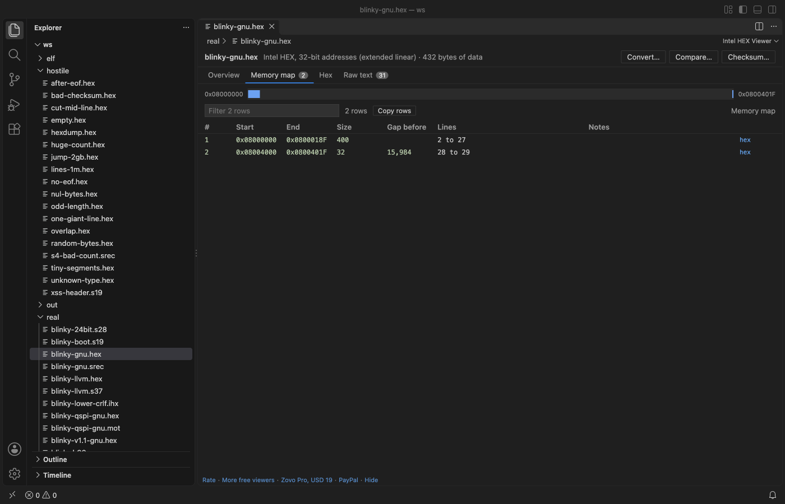

Open files in VS Code and Cursor / Binary, network and hardware
Convert an Intel HEX file to a flat binary
A .hex file stores data by address, and a flat .bin has no addresses, so every gap between segments must be filled. Intel HEX Viewer opens the file in VS Code and shows each segment and gap on the Memory map tab for free. Its Convert tool saves a flat binary for the address range you pick, with gaps filled with 0xFF or a byte you choose. Convert is part of Zovo Pro (USD 19 once), with 3 free tries.
Free, MIT license. Extension ID zovo.zovo-intel-hex-viewer, version 0.1.1. Needs VS Code 1.90.0 or newer.

Steps in VS Code
- Install Intel HEX Viewer from the Marketplace, or press Ctrl+P (Cmd+P on macOS) and run
ext install zovo.zovo-intel-hex-viewer. - Right-click the
.hexfile in the Explorer and pick "Open in Intel HEX Viewer". A.hexfile opens as text when you click it..ihex,.srec,.s19,.s28,.s37and.motfiles open in the viewer directly. - Open the Memory map tab. It lists each block with its start, end, size and the gap before it. Every gap byte inside your range becomes a fill byte in the
.bin. - Check the Overview. If the file has a Problems tab, fix those lines first, so the binary holds the data you expect.
- Click Convert... and pick Binary (.bin), gaps filled. Type the first and last address, or leave them empty for the first and last address with data, and set the fill byte.
- Click Save as... and pick a name. The message under the form gives the size of the new file and the address range it covers.
Where Zovo Pro saves time
The memory map, the Problems tab, the hex view by address with the data inspector, the raw text and copy are free, with no limit and no sign-in. The viewer is read-only and never changes the file you opened.
A flash tool or bootloader often wants a plain .bin that starts at a known address. Convert to Intel HEX, S-record or binary writes the address range you pick as a flat binary with gaps filled, or as Intel HEX, S19, S28 or S37 with 8 to 64 data bytes per record. The reader and converter were checked against GNU objcopy and llvm-objcopy. The other Pro tools compare two images by address and compute a checksum or CRC over an address range.
With Convert to Intel HEX, S-record or binary (Zovo Pro)
- Click Convert... at the top of the viewer, or run "Intel HEX Viewer: Convert to Intel HEX, S-record or binary (Pro)" from the Command Palette.
- Pick Binary (.bin), gaps filled, the address range and the fill byte, then use the Save as... button.
- A try counts only when the file is written. Cancel in the save dialog uses no try.
Convert to Intel HEX, S-record or binary works 3 times on your computer before it asks for a license, and a try counts only when you get a result. Opening a file shows no popup and no countdown.
Zovo Pro costs USD 19 once. It is not a subscription, and it turns on the Pro tools in every Zovo extension, not only Intel HEX Viewer. After a card payment (Stripe) your license key shows on the next page. In VS Code, run "Zovo Pro: Enter Zovo Pro license key" from the Command Palette and paste it. The key is checked on your computer, with no network call. With GitHub Sponsors, pick the "$19 one time" tier, then run "Zovo Pro: I already paid: unlock with GitHub Sponsors" and sign in with the same GitHub account. With PayPal, send USD 19 with "Zovo Pro" in the note and the key comes by email within a day.
A team of 5: USD 59 once, by card or by PayPal. Every rule and every Pro tool is on the Zovo Pro page.
Steps in Cursor, Windsurf or VSCodium
- Open the Extensions view with Ctrl+Shift+X (Cmd+Shift+X on macOS).
- Search for
zovo.zovo-intel-hex-viewerand click Install. Cursor, Windsurf and VSCodium install from Open VSX, where it is published aszovo/zovo-intel-hex-viewer. - If your editor has no gallery, download the .vsix from the Open VSX page and run "Extensions: Install from VSIX...".
- Then use it the same way as in VS Code.
What Intel HEX Viewer handles
- Intel HEX with 16-bit, 20-bit (record 02) and 32-bit (record 04) addresses, and start address records 03 and 05.
- Motorola S-records S1, S2 and S3 with S0 header text and S5 and S6 counts.
- Files of a million lines, which open in about a second.
- Overlapping records, which the memory map marks.
What it does not do
- A binary file can cover up to 256 MB of addresses. Pick a smaller range for a file whose segments lie far apart.
- A
.binholds no addresses. Note the first address, because your flash tool needs it. - Plain
.binfiles are not read here, so the tool does not convert a.binback to HEX. Hex Viewer opens.binfiles. - Text files up to 256 MB (about 6 million lines).
Other options
- objcopy. From GNU binutils or the Arm toolchain.
objcopy -I ihex -O binary firmware.hex firmware.binwrites the binary. It fills gaps with zero bytes unless you set a gap fill. - SRecord. Free command-line tools.
srec_catconverts HEX to binary with a fill byte and an address range set on the command line.
Install counts and Open VSX status were checked on 13 November 2026. Descriptions in quotes are the extensions' own.
Questions
Why is my .bin file so large?
The file has data at addresses far apart, such as an application at 0x08000000 and a config block much higher. Every byte between them is written as a fill byte. The Memory map tab shows those gaps. Convert each block on its own with its address range.
Which fill byte should I use?
Erased flash reads 0xFF on most microcontrollers, so 0xFF matches what the chip holds after a flash. Use 0x00 if your tool or CRC expects zeros.
Can I convert an S19 file the same way?
Yes. S-record files open in the same viewer and convert to binary or Intel HEX.
Does it work in Cursor or Windsurf?
Yes. Cursor, Windsurf and VSCodium install extensions from Open VSX. Search for the extension in their Extensions view and install it there.
More about Intel HEX Viewer
Read the Intel HEX Viewer page for every feature and setting, or the source code on GitHub.
Related guides
- See what an Intel HEX or S19 file puts in memory
- Compare two .hex or .s19 firmware images by address
- Find checksum errors and bad records in an Intel HEX file
- Compute a CRC over an address range of a firmware image
Zovo Pro and support
Zovo Pro: USD 19 once, every Zovo viewer. It turns on the Pro tools in this extension and in the other Zovo extensions you use. The free features stay free.
After a card payment your license key shows on the next page. Paste it with the command "Zovo Pro: Enter a key".
You can also support the work with no Pro:
Need your format supported?
Open a format request with a sample file, and I reply there whether it can be done. For USD 299 once, through this GitHub Sponsors tier, I add your file format or a missing feature to this extension, with tests, within 7 days.